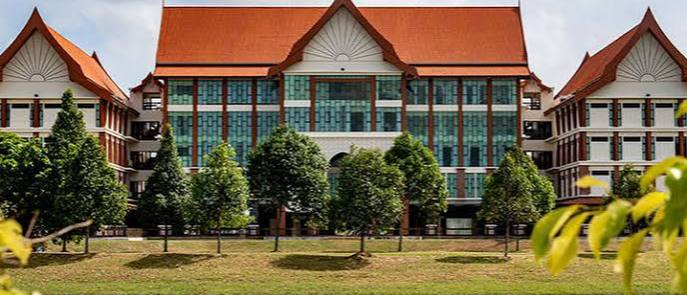
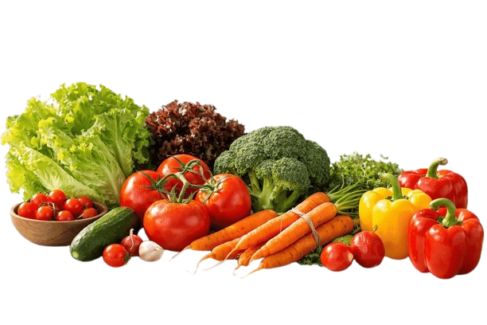

Memberi maklumat yang
tepat dan mudah difahami.
Tentang
UMKHealthyFood
UMKHealthyFood ialah platform yang menyediakan maklumat ringkas dan mudah difahami tentang makanan segera dan pilihan makanan yang lebih sihat, khusus untuk pelajar.

Objektif Laman Web
Membantu pelajar membuat
pilihan makanan yang lebih baik.

Menggalakkan gaya hidup sihat
dalam kehidupan seharian.
Kenapa laman web ini dibina ?
Ramai pelajar cenderung memilih makanan segera kerana faktor masa, kemudahan dan harga. Oleh itu, laman ini dibangunkan sebagai medium untuk memberikan kesedaran dan maklumat yang tepat serta mudah difahami berkaitan makanan segera dan pilihan makanan yang lebih sihat.